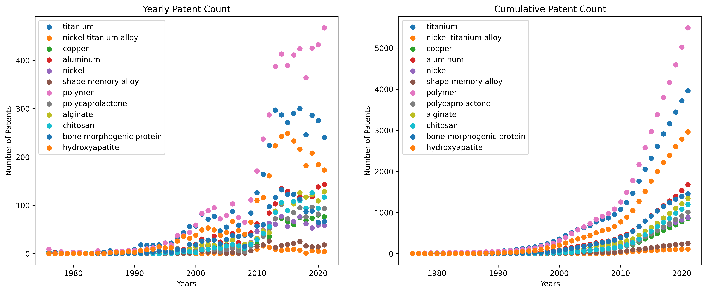
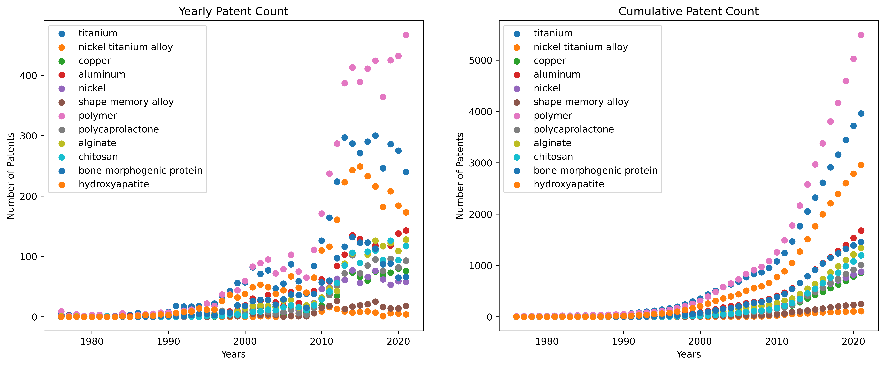
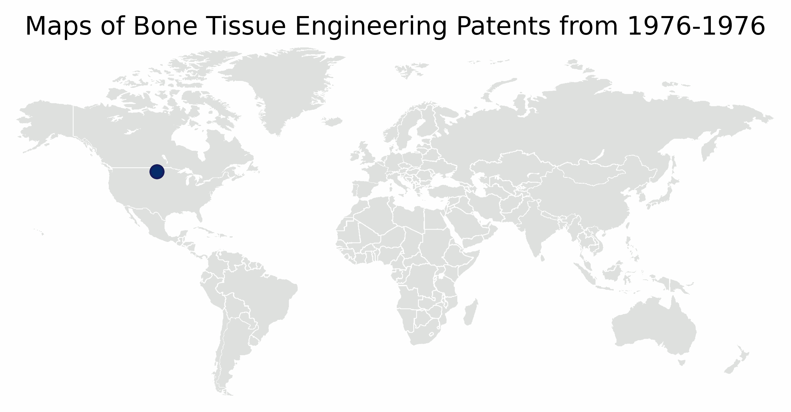

PatentSurvey
Survey of Scaffold Parameters for Bone Tissue Engineering
Motivation: Make an ingishtful decision based on an survey of a public database. To minimize bias, lets audit the US Patent database to find freqeuncy of key design parameters.
Objective & Tasks
The objective is to query, scrape, and analyze the US Patent and Trademark Office for bone tissue engineering related articles and then examine that resource for trends.The tasks to complete are:
(1) Build: Query the US Patent and Trademark database for bone tissue engineering terms, such as craniofacial, biomanufacturing, tissue engineering, biofabrication, osseointegration, mandible, and osteoconductive.
(2) Clean: Aggregate unique patents specific to area of interest. Patents must have 3 of the following terms (in addition to one of the search terms) to be included in further analysis. Terms include: regenerative medicine, tissue engineering, bone, scaffold, orthodontic, biocompatible, biodegradable, and tissue scaffold.
(3) Define: Define the size of the database. Plot the number of patents per year (annual and cumulative).
(4) Geolocation: Define the geographic footprint of the database. Map the assignee address of the patents per year.
(5) Historical Material Usage: Plot the occurrances of specific materials in the patent database (annual and cumulative).
(6) Text Analysis: Count the frequency of words to identify the most prominent materials, products, pore shapes, sizes, and use cases by text analysis.
*** not yet completed ***
(7) Cross-reference Google Scholar for cited-by metric to identify most impactful work.
(8) Plot occurances of the terms found in
The History of Bone Tissue Engineering in the Patent Archive
The plot represents 7394 patents filed (8072 documents filed) with the US Patent and Trademark Office over a 47 year span, from 1973-2020.
 

Map of Bone Tissue Engineering in the Patent Archive

ata term:assignee_name
| assignee_name |
Number of Patents |
| Warsaw Orthopedic, Inc. |
331 |
| Align Technology, Inc. |
168 |
| DePuy Synthes Products, Inc. |
152 |
| Ethicon, Inc. |
87 |
| Zimmer, Inc. |
73 |
| The Invention Science Fund I, LLC |
69 |
| Cochlear Limited |
51 |
| ALIGN TECHNOLOGY, INC. |
50 |
Trial counts for the metadata term:claims
Trial counts for the metadata term:country_editted
| country_editted |
Number of Patents |
| US |
6856 |
| CH |
165 |
| IL |
113 |
| DE |
107 |
| AU |
82 |
| CA |
73 |
| SE |
71 |
| FR |
70 |
| GB |
68 |
| JP |
59 |
Trial counts for the metadata term:file_month
| file_month |
Number of Patents |
| March |
784 |
| October |
758 |
| December |
702 |
| June |
684 |
| April |
681 |
| July |
676 |
| February |
661 |
| May |
657 |
| August |
649 |
| November |
625 |
| January |
611 |
| September |
601 |
Trial counts for the metadata term:file_year
| file_year |
Number of Patents |
| 2016 |
555 |
| 2014 |
524 |
| 2015 |
522 |
| 2013 |
492 |
| 2011 |
476 |
| 2012 |
466 |
| 2017 |
456 |
| 2018 |
389 |
| 2010 |
378 |
| 2009 |
353 |
| 2007 |
317 |
| 2008 |
294 |
| 2006 |
253 |
| 2005 |
231 |
| 2004 |
229 |
| 2019 |
216 |
| 2003 |
211 |
| 2000 |
199 |
| 2002 |
194 |
| 2001 |
194 |
| 1999 |
161 |
| 1998 |
129 |
| 1997 |
112 |
| 1996 |
106 |
| 2020 |
89 |
| 1995 |
86 |
| 1994 |
64 |
| 1993 |
58 |
Trial counts for the metadata term:inventors
| inventors |
Number of Patents |
| [['William F.', 'McKay', 'Memphis, TN']] |
55 |
Trial counts for the metadata term:patent_month
| patent_month |
Number of Patents |
| March |
727 |
| August |
718 |
| November |
709 |
| October |
698 |
| April |
690 |
| July |
681 |
| June |
665 |
| September |
663 |
| December |
653 |
| May |
641 |
| January |
624 |
| February |
603 |
Trial counts for the metadata term:patent_year
| patent_year |
Number of Patents |
| 2021 |
640 |
| 2020 |
586 |
| 2017 |
585 |
| 2019 |
572 |
| 2014 |
572 |
| 2016 |
568 |
| 2015 |
524 |
| 2013 |
511 |
| 2018 |
509 |
| 2012 |
398 |
| 2011 |
319 |
| 2010 |
253 |
| 2006 |
160 |
| 2009 |
152 |
| 2001 |
147 |
| 2003 |
143 |
| 2002 |
143 |
| 2005 |
122 |
| 2007 |
118 |
| 2000 |
110 |
| 1999 |
106 |
| 2004 |
101 |
| 2008 |
99 |
| 1998 |
99 |
| 1997 |
79 |
| 2022 |
55 |
Trial counts for the metadata term:state_editted
| state_editted |
Number of Patents |
| US |
3752 |
| CA |
788 |
| N/ |
465 |
| MA |
447 |
| IN |
263 |
| NJ |
242 |
| PA |
237 |
| TN |
196 |
| TX |
169 |
| FL |
167 |
| NY |
154 |
| NC |
91 |
| MI |
88 |
| OH |
87 |
| VA |
84 |
| GA |
81 |
| MN |
78 |
| MD |
74 |
| IL |
62 |
| CO |
52 |